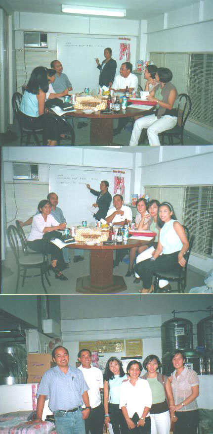

Tesz's August 2000 photos
These photos were taken at Raul's building.After the meeting,
may free samples pa of his products.Kayang kaya niya bigyan lahat ng aattend ng reunion
sa Sept.May pa-raffle pa;lifetime supply of Ramchem products,di ba Oyet?
(Scroll down)
Tesz, Connie, Ed J, Carolina, Raul, Delta, Manolita

From: Amy C
Date: Mon Aug 14, 2000 6:49pm
Subject: RE: RAMCHEM]
Tesz,
Maniniwala na sana kaming siryoso kayo sa meeting, kaya lang since may mga
beer bottles sa mesa...Tell Carol, convincing yung pose n'ya.
Ariel,
Nasaan na 'yong minutes noong last Friday? Madaya kayo ni Rod. Tulog na kayo
nasa kalye pa kami. Sayang you missed Art's performance, sana nadamay din
kayo sa kahihiyan namin ng winelcome yong QCSHS Batch 75- biro mo alam ng
lahat doon na over 40 na kami! Nagkikintaban pa naman 'yong mga noo nila...
Raul,
Naconvince nyo ba si Art na bumalik sa homecoming to provide the
intermission number? Si Art Ambrosio ha hindi si Art Manuel!
To the rest,
Wag kayong mag-alala, wholesome fun lang naman ( hindi lang ako sigurado
noong puro boys na lang)
'til next time.
Amy C
mailto:qcshs75@yahoo.com